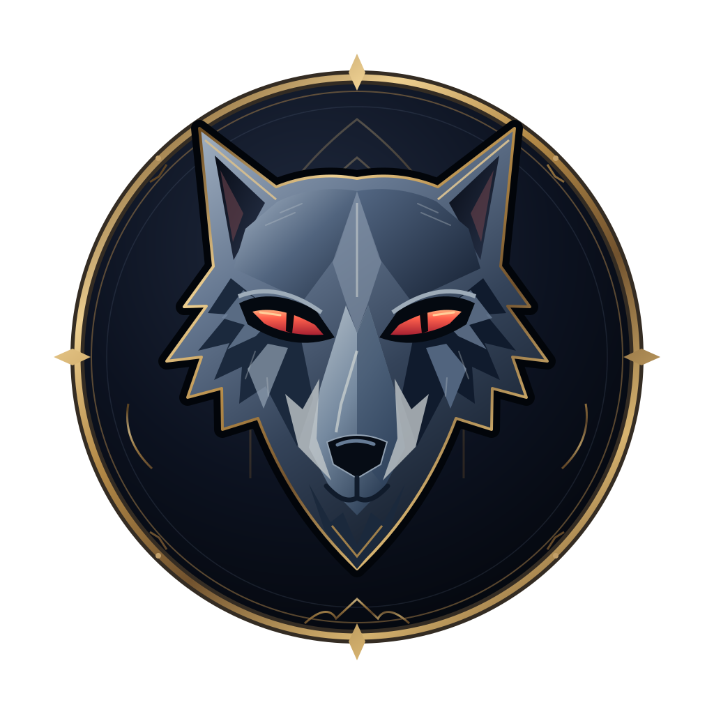

月夜议会
游戏大厅
本地网页版 · 1 名人类玩家 + AI · OpenAI 兼容接口
…
本机玩家档案 · 战绩 / 笔记 / 经验按档案隔离
发现进行中的对局
THE MOONLIT COUNCIL
月已升，诸位请入席
一位人类 · 一桌 AI · 每句话都可能改变结局。
今夜来客
不同的性格，相同的游戏规则。人物外观不代表身份或阵营。
翻阅来客名册 ↗GAME SETUP
开局配置
先确认模式与模型，再选择板子和座位。
开局前，选择对局模式
免费试玩使用本地流程脚本；真实对局需要先保存模型地址、模型名和 API Key。
ARCHIVES
对局历史
按当前玩家档案查看未结束对局、战绩和公开事件。
YOUR CHRONICLE
玩家中心
属于你的身份、故事与记忆。档案保存在本机，无需密码。
RULEBOOK
规则书
胜负条件、夜晚顺序和本局角色说明。